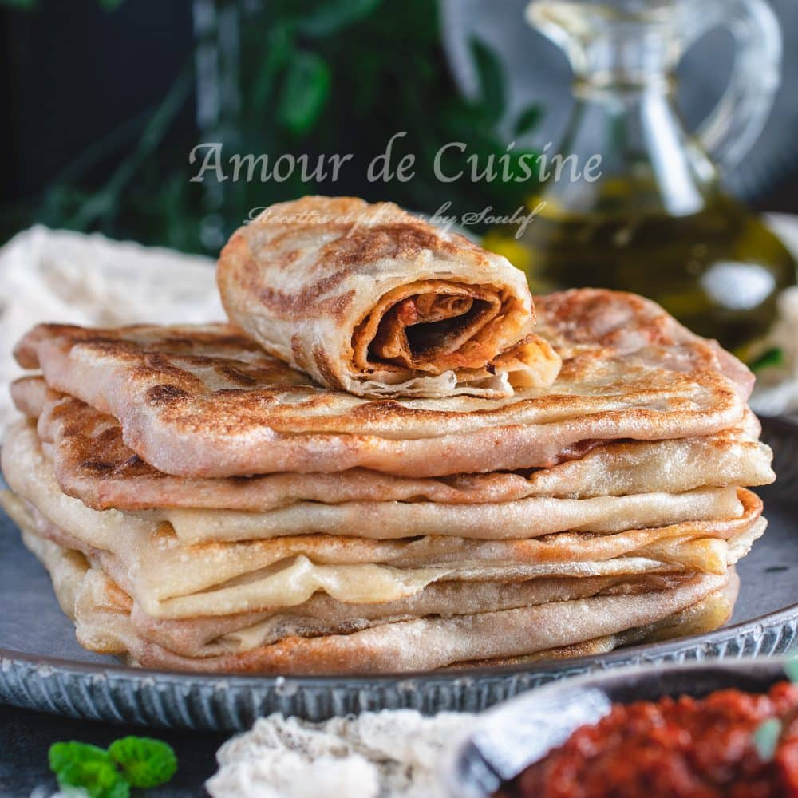

Mhadjeb

Description
Mhadjeb (also spelled Mahdjouba) is a traditional Algerian flatbread made from fine semolina, filled with a savory mixture of onions, tomatoes, and spices.
It's folded and cooked on a griddle, producing a crispy outside and soft, flavorful filling. It’s often enjoyed as street food or a hearty snack.
Ingredients:
For the dough:
- 3 cups fine semolina
- 1 tsp salt
- 1½ cups lukewarm water (adjust as needed)
- 2 tbsp oil (for kneading and cooking)
For the filling:
- 2–3 large onions, finely chopped
- 2–3 ripe tomatoes, peeled and finely chopped
- 2 cloves garlic, minced
- 1 tbsp tomato paste (optional)
- 1 small green chili or hot pepper (optional, for spice)
- 1 tsp paprika
- 1 tsp ground black pepper
- Salt to taste
- Olive oil (for cooking)
Steps to make it:
Go back to Homepage